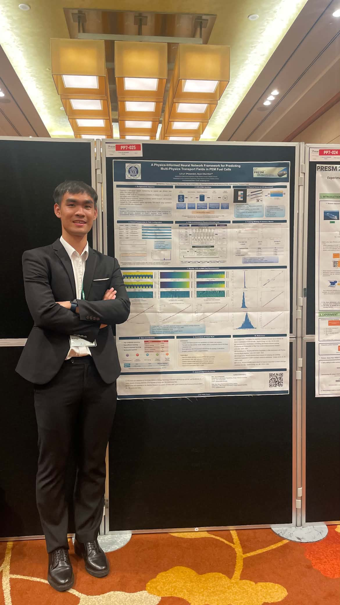

September 2026 · Milestone
Beginning the Ph.D. stage at Kongju National University
Expanding research from PEMFC modeling and experiments into physics-informed AI, optimization, digital twins and intelligent engineering systems.
Journey
A timeline of research milestones, conference presentations, awards, workshops, seminars and selected academic activities throughout my research journey.
2026
Add new entries here whenever an activity is important enough to become part of your academic story.
Expanding research from PEMFC modeling and experiments into physics-informed AI, optimization, digital twins and intelligent engineering systems.
A geometry-conditioned PINN pipeline combining CFD data, boundary conditions, interface constraints, collocation points and physical residuals.
Experimental comparison of conventional and baffled configurations across temperature and pressure conditions.
Presented “A Physics-Informed Neural Network Framework for Predicting Multi-physics Transport Fields in PEM Fuel Cells.”
Reviewed research related to PEMFC thermal management, electrochemical performance and cooling flow-field design.
Building foundational capability in operation, calibration and programming, with a roadmap toward vision, AI, digital twins and learning-based robotics.
Presented AI-driven optimization of Morpho-Baffles in PEMFC using CFD and surrogate modeling.
Presented surrogate modeling for optimizing baffle geometry to improve power and mass transfer in PEMFC micro flow channels.
Presented “Morpho-Baffles: Adaptive Flow Field Design for PEMFC Using Machine Learning.”
Third Prize at Honda Eco Mileage Challenge; Top 10 Asia Vehicle Design at Shell Eco-Marathon Asia; Sakura Science Exchange Program full scholarship; Third Prize at a student scientific research conference.
ACADEMIC ACTIVITIES
Scholarships, research awards, presentation awards, academic recognition and selected achievements.
Oral presentations, poster sessions, invited talks and participation in academic conferences.
View conferences →
Technical workshops, professional training, summer schools, seminars and academic programs.
Project launches, completed experiments, research progress, collaborations and major academic milestones.
Conferences

Poster Presentation
Presented ongoing research on a physics-informed neural network framework for predicting oxygen concentration, velocity and pressure fields in PEM fuel cells using CFD-informed training and physical constraints.